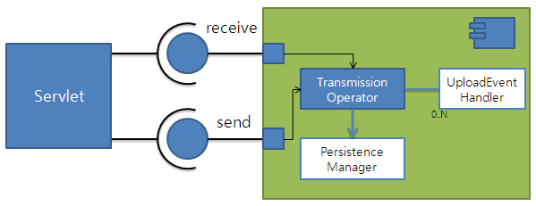

jcf-fileupload-3.8.
기존 3.7 버전에서의 fileupload 모듈은 TransmissionOperator를 중심으로 제어하게 되므로 기존 MVC 체계의 컨트롤러와의 통합에 있어 개념상 어려움이 있었으나,
3.8 버전에서는 이러한 URL dispatcher 역할을 분리하여 MVC 핸들러를 그대로 사용하거나 별도의 서블릿 매핑을 하여 사용하는 방법을 모두 지원한다.
별도 서블릿 매핑을 하는 경우에도 Spring을 사용하는 경우 Schema 기반의 URL-UploadEventHandler 매핑으로 다양한 업무 요구를 간단하게 설정처리할 수 있다.
주 - TransmissionOperator는 deprecate 되었으며, 이는 개별 구현으로 넘기도록 한다.
기존 3.7 버전에서는 URL과 PersistenceManager 상의 디렉토리/파일을 명확히 구분하지 않은 개념 및 용어 사용으로 혼동이 있었으나 3.8에서는 URL과 folder/fileName으로 명확하게 구분하고 있다.
업로드와 다운로드 체계 상이

웹 애플리케이션에 등록된 임의의 서블릿으로, 개별 구현한 서블릿 또는 별도의 웹 프레임워크를 이용하여도 무방하다.
단, 웹 프레임워크 등에서 별도의 멀티파트 핸들러를 설치하거나 ServletRequest의 InputStream을 열거나 ServletResponse,의 OutputStream을 먼저 이용한 경우는 사용할 수 없다.
이 서블릿의 URL Mapping 패턴은 뒷 부분을 와일드 카드로 지정하여 파일 식별자와 상관 없이 클라이언트에 제시되는 파일 이름 부분을 임의로 제시할 수 있도록 해 주는 것이 좋다. 예를 들어 /download/* 과 같이 지정해주는 것이 좋다.
업로드인지 다운로드인지 구분만 할 수 있으면 다운로드와 업로드를 동일한 서블릿을 이용해도 되고, 별도의 서블릿 URL을 각각 주어도 상관 없다.
업로드된 파일 저장 및 조회, 삭제, 디렉토리 삭제를 담당한다. 저장 장소는 임의 구조의 파일시스템 (디렉토리 또는 데이터베이스, JCR 등)이 된다.
두 가지 기능이 있다.
브라우저별 특이사항 처리
응답 화면 처리
파일 시스템 처리 및 관리 (기본 구현 예는 제공)
서블릿
데이터베이스 업무
| 구분 | 라이브러리 |
|---|---|
| mandatory | |
| servlet api | |
| slf4j-api | |
| commons-fileupload | |
| optional | |
| commons-io | |
| spring-web |
| 용어 | 설명 |
|---|---|
| URN | 멀티파트 한 묶음의 고유 식별자. 논리적인 멀티파트 콘텐츠의 위치. |
| fileCount | 멀티파트 중 파일로 식별되는 내용의 순번 |
URI 호출 예를 들어 설명하면,
| 구분 | 요청 |
|---|---|
| 업로드 | POST / [contextPath] /upload/ [URN] |
| 다운로드 | POST / [contextPath] /upload/ [URN] / [fileCount] / [임의의 파일명] |
위의 예와 같이 URI의 맨 뒤의 부분은 파일 명 처럼 만들어두면 각종 브라우저에서 다운로드 파일 명을 제시할 때
이용하게 된다.
요청 URI에서의 URN 및 fileCount 부분은 반드시 평문으로 할 필요 없이, 암복호화 또는 시간 함수의 결과로 만들어도 된다.
<?xml version="1.0" encoding="UTF-8"?> <web-app id="WebApp_ID" version="2.4" xmlns="http://java.sun.com/xml/ns/j2ee" xmlns:xsi="http://www.w3.org/2001/XMLSchema-instance" xsi:schemaLocation="http://java.sun.com/xml/ns/j2ee http://java.sun.com/xml/ns/j2ee/web-app_2_4.xsd"> <display-name>sltis_sample</display-name> <context-param> <param-name>contextConfigLocation</param-name> <param-value> classpath:/applicationContext.xml </param-value> </context-param> <listener> <listener-class>org.springframework.web.context.ContextLoaderListener</listener-class> </listener> <servlet> <servlet-name>upload</servlet-name> <servlet-class>org.springframework.web.context.support.HttpRequestHandlerServlet</servlet-class> </servlet> <servlet-mapping> <servlet-name>upload</servlet-name> <url-pattern>/upload/*</url-pattern> </servlet-mapping> </web-app>
<?xml version="1.0" encoding="EUC-KR"?> <beans xmlns:xsi="http://www.w3.org/2001/XMLSchema-instance" xmlns="http://www.springframework.org/schema/beans" xsi:schemaLocation=" http://www.springframework.org/schema/beans http://www.springframework.org/schema/beans/spring-beans-3.0.xsd "> <bean id="upload" class="sample.UploadHandler"> <property name="fileTransmissionOperator" ref="fileTransmissionOperator" /> </bean> <bean id="fileTransmissionOperator" class="jcf.fileupload.TransmissionOperator"> <property name="maxUploadSize" value="1000000000" /> <property name="uploadEventListeners"> <list> <bean class="sample.SampleUploadEventListener" /> </list> </property> <property name="persistenceManager"> <bean class="jcf.fileupload.file.FilePersistenceManager"> <property name="baseDirectory" value="d:/tmp/upload" /> </bean> </property> </bean> </beans>
package sample;
import java.io.IOException;
import javax.servlet.ServletException;
import javax.servlet.http.HttpServletRequest;
import javax.servlet.http.HttpServletResponse;
import jcf.fileupload.MultiPartInfo;
import jcf.fileupload.TransmissionOperator;
import org.slf4j.Logger;
import org.slf4j.LoggerFactory;
import org.springframework.web.HttpRequestHandler;
/**
* 파일 업로드 처리를 위한 샘플 서블릿 핸들러.
* <p>
* 서블릿 클래스로는 {@link org.springframework.web.context.support.HttpRequestHandlerServlet}
* 를 등록하여 서블릿 이름과 동일한 이름으로 이 {@link HttpRequestHandler} 타입을 등록하여 사용.
* <p>
* 서블릿 URL 매핑은 임의의 확장명을 처리하도록 특정 URL 이하 서브 디렉토리를 이용하도록 한다. (예: "/upload/*" )
* <p>
* /로 끝나면 업로드로 처리하고 아니면 다운로드로 처리한다.
*
* @author Administrator
*/
public class UploadHandler implements HttpRequestHandler {
private static final Logger logger = LoggerFactory.getLogger(UploadHandler.class);
private TransmissionOperator transmissionOperator;
public void setFileTransmissionOperator(TransmissionOperator fileTransmissionOperator) {
this.transmissionOperator = fileTransmissionOperator;
}
/**
* {@inheritDoc}
* <p>
* 파일 업로드 및 다운로드 요청을 구분하여 처리하는 샘플 서블릿 핸들러.
* <ul>
* <li>업로드와 다운로드를 구분</li>
* <li>request URI로부터 URN 추출</li>
* <li>추가로 다운로드시에는 fileCount 추출</li>
* </ul>
* 위 정보를 이용하여 멀티파트 핸들러 호출
* <p>
*
*/
public void handleRequest(HttpServletRequest request, HttpServletResponse response) throws ServletException, IOException {
String urn = request.getPathInfo();
if (urn.endsWith("/")) {
upload(request, response);
} else {
download(request, response);
}
}
private void upload(HttpServletRequest request, HttpServletResponse response) throws IOException {
String path = request.getPathInfo();
String urn = path.substring(0, path.lastIndexOf("/"));
try {
MultiPartInfo info = transmissionOperator.receiveMultipartRequest(request, urn);
request.setAttribute("attributes", info.getAttributes());
request.setAttribute("fileInfos", info.getFileInfos());
request.getRequestDispatcher("/upload.jsp").forward(request, response);
} catch (Exception e) {
logger.warn("error upload to " + urn, e);
response.sendError(HttpServletResponse.SC_INTERNAL_SERVER_ERROR, "error upload to " + urn);
}
}
/**
* path의 마지막은 리소스를 논리적으로 나타내는 위치에서 제외되고 대신 클라이언트 브라우저에 제시될
* 파일명이 된다. 마지막에서 두 번째는 fileCount로 추출한다.
*
* @param request
* @param response
* @throws IOException
* @throws ServletException
* @throws IOException
*/
private void download(HttpServletRequest request, HttpServletResponse response) throws IOException {
String path = request.getPathInfo();
String urnAndFileCount = path.substring(0, path.lastIndexOf("/"));
int delimitFileCount = urnAndFileCount.lastIndexOf("/");
String urn = urnAndFileCount.substring(0, delimitFileCount);
int fileCount = Integer.parseInt(urnAndFileCount.substring(delimitFileCount + 1));
try {
transmissionOperator.sendOctetStream(response, urn, fileCount);
} catch (IOException e) {
logger.warn("error sending download stream", e);
}
}
}
package sample;
import java.util.Iterator;
import javax.servlet.http.HttpServletRequest;
import jcf.fileupload.FileInfo;
import jcf.fileupload.MultiPartInfo;
import jcf.fileupload.UploadEventHandler;
import org.slf4j.Logger;
import org.slf4j.LoggerFactory;
public class SampleUploadEventListener implements UploadEventHandler {
private static final Logger logger = LoggerFactory.getLogger(SampleUploadEventListener.class);
public boolean authorityCheck(HttpServletRequest request, String urn) {
logger.info("urn {} is accepted", urn);
return true;
}
public void postprocess(String urn, MultiPartInfo info) {
logger.info("form upload attributes : {}", info.getAttributes());
Iterator<FileInfo> it = info.getFileInfos().iterator();
while (it.hasNext()) {
FileInfo fileInfo = it.next();
logger.info("file uploads : {} {} {} {} {}",
new Object[]{
fileInfo.getName(),
new Long(fileInfo.getSize()),
fileInfo.getType(),
fileInfo.getUrn(),
new Integer(fileInfo.getFileCount())
});
}
}
}